A pesquisa Datafolha de junho não mostra virada contra Flávio: o 2º turno repete maio. Mas a manchete “Lula na frente” não sobrevive à estatística. A diferença de 4 pontos é menor que a margem de erro da diferença (~±4 pp), e some por completo quando a renda da amostra é recalibrada à PNAD. Auditamos placar, desenho amostral, transferência de voto, reponderação e as perguntas que foram aplicadas e não publicadas — inclusive perguntas sobre o próprio Flávio.
2.004 entrevistas · 139 municípiosCampo 17–18/06/2026Pontos de fluxo (não-domiciliar)Contratante: Folha de S.PauloRegistro TSE BR-09956/2026
47x43
2º turno Lula × Flávio
idêntico a maio · gap de 4 pp
±4,1
Margem sobre a diferença
empate técnico já no AAS
45,6–45,9
2º turno reponderado à PNAD
renda por pessoa zera a vantagem
77%
Setores repetidos de maio
255 de 331 · SP 20 de 22
Sumário executivo
Veredito em uma página
Não há evidência de fraude nos documentos. Há evidência forte de duas coisas: excesso de certeza na manchete e insuficiência de transparência no método. A foto eleitoral é desfavorável a Flávio entre mulheres, baixa renda, Nordeste, católicos e pretos — mas o número que virou notícia, “Lula 47 x 43”, é estatisticamente indistinguível de um empate, e desaparece quando a renda da amostra é alinhada à população.
Placar
47 x 43
2º turno idêntico a maio. Mas a margem de erro da diferença entre dois candidatos é ~±4 pp — maior que os 4 pontos que separam os dois. Empate técnico.
Renda
45,6 / 45,9
Reponderando a renda à PNAD por pessoas 16+, Lula cai a 45,6 e Flávio sobe a 45,9. A vantagem nasce de uma amostra mais pobre que o país.
Transferência
2 : 1
Na consolidação do 1º para o 2º turno, o voto de terceiros e indecisos vai para Flávio na proporção de ~2 para 1 sobre Lula. O anti-Lula é real.
O que o Datafolha fez bem
Perguntou o voto antes dos módulos de Trump, facções, economia e ideologia, protegendo o top-line de priming. Acertou sexo, região e escolaridade contra TSE/PNAD. Publicou anexo de bairros — algo que a maioria dos institutos não faz.
O que falta para ser incontestável
Microdados, pesos finais por entrevistado, efeito de desenho real (não AAS), protocolo de ponto/horário/recusa, distribuição do voto lembrado de 2022 e o resultado de todas as perguntas registradas — inclusive as que avaliam o próprio Flávio.
Achado nº 1 · estatística
Por que “47 x 43” é empate técnico
A margem de erro de ±2 pp que o Datafolha divulga vale para cada estimativa isolada (o 47 de Lula, o 43 de Flávio). Ela não é a margem sobre a distância entre os dois. Quando se quer saber se um candidato está realmente à frente do outro, a conta certa é o erro da diferença — e ele é quase o dobro.
A margem da diferença, na fórmula
Para dois candidatos da mesma amostra, o erro da diferença é
EP(L−F) = √[(pL+pF−(pL−pF)²)/n].
Com pL=0,47, pF=0,43 e n=2.004:
EP da diferença ≈ 2,12 pp → margem 95% ≈ ±4,15 pp.
Conclusão: ao nível de 95%, não dá para afirmar que Lula está à frente — mesmo usando a margem otimista de amostra aleatória simples.
E isso é antes do efeito de desenho. Com o deff real (próxima seção), a margem da diferença sobe para ~±5 pp, e o empate fica ainda mais nítido.
Visual: o intervalo dos dois se sobrepõe
Os intervalos de 95% de Lula e Flávio se cruzam (faixa dourada). Quando isso acontece, a liderança não é estatisticamente significativa.
Tradução honesta da manchete
“Lula 47 x 43” deveria ser noticiado como “Lula e Flávio empatados tecnicamente, com leve vantagem nominal de Lula”. A diferença de 4 pontos é exatamente o tipo de gap que vira manchete de “liderança” quando, em rigor, é indistinguível de zero. Não é erro de cálculo do Datafolha — é leitura excessiva do número pela cobertura.
Achado nº 2 · desenho amostral
O deff simulado: a margem real é maior que ±2
A própria declaração de responsabilidade técnica diz, com todas as letras: “O Datafolha não usa abordagem domiciliar e, sim, abordagem em pontos de fluxo populacional.” Isso tem duas consequências que a margem de ±2 pp esconde: (1) ponto de fluxo é seleção por interceptação, não probabilística — a rigor, não existe margem clássica; (2) há conglomeração: ~6 entrevistas por setor censitário, em 331 setores. Conglomeração + ponderação inflam a variância pelo efeito de desenho (deff).
Como o deff corrói o n
deff de conglomeração ≈ 1 + (b̄−1)·ρ, com b̄≈6 entrevistas/setor e ρ = correlação intraclasse do voto no setor. A ponderação adiciona 1 + CV²(pesos). O n efetivo é n / deff. A margem real cresce com a raiz do deff.
margem por estimativamargem da diferença (L−F)
Cenário
deff
n efetivo
±/estim.
±/dif.
AAS declarado (ρ=0)
1,00
2.004
2,2
4,1
Otimista (ρ=0,02)
1,17
1.714
2,4
4,5
Realista (ρ=0,06)
1,46
1.376
2,6
5,0
Conservador (ρ=0,10)
1,80
1.113
2,9
5,6
b̄ = 2.004/331 ≈ 6,05. CV(pesos) suposto 0,25–0,45 (compatível com o ajuste de escolaridade ×1,23 / ×0,86). Sem os microdados, é simulação — mas é a faixa plausível, e toda ela amplia a margem divulgada.
A margem cresce, a diferença não
O ponto técnico, sem rodeio
A margem de ±2 pp é a margem de uma amostra aleatória simples — que não é o desenho do Datafolha. Em amostra por pontos de fluxo, conglomerada e ponderada, a margem realista por estimativa fica em torno de ±2,6 pp e a margem sobre a diferença em ~±5 pp. O “Lula à frente” não passa em nenhum dos cenários. Para superar a ambiguidade, o Datafolha precisaria publicar o deff e o n efetivo — coisa que não faz.
Achado nº 3 · transferência de voto
Quem herda os votos do 1º para o 2º turno
No 1º turno, Lula tem 41 e Flávio 31. Sobram 28 pontos que não são de nenhum dos dois: 17 de candidatos do “terceiro caminho”, 7 de branco/nulo e 4 de indecisos. No 2º turno, Lula sobe a 47 (+6) e Flávio a 43 (+12). Ou seja: na consolidação, o voto disponível corre para Flávio na proporção de ~2 para 1 sobre Lula. É a melhor notícia do levantamento para a direita — e mostra que o anti-Lula existe e tem para onde ir.
LulaFlávioterceiros + branco/nulo + indecisos (28 pts) · ficam fora
Leitura de fluxo agregado (corte transversal), não painel individual: mostra o saldo líquido de cada bloco entre o 1º e o 2º turno, não o trajeto de cada eleitor. Soma do 2º turno = 99 por arredondamento. Fonte: relatório Datafolha jun/2026, pp. 23 e 25.
A batalha dos três cenários: o teto de Lula está travado
O Datafolha testou Lula contra três nomes da direita. Em todos, Lula fica entre 47 e 48 — seu teto não se move. Quem muda é o adversário. E o adversário mais competitivo é justamente Flávio (43), à frente de Caiado (41) e Zema (39).
Flávio é o adversário que mais aproveita o anti-Lula. O paradoxo da campanha: ele tem a maior rejeição e, ao mesmo tempo, a melhor transferência. Fonte: relatório jun/2026, p. 25, Situações A/B/C.
Por que isso importa para a estratégia
A eleição não é sobre Lula crescer. Ele está colado no teto de 47–48 contra qualquer um. É sobre a oposição consolidar os 28 pontos disponíveis.
Flávio já transfere melhor que os rivais. Trocar de candidato (Caiado/Zema) não melhora o 2º turno da direita — piora. O ativo é a polarização, não a moderação do nome.
O gargalo é a rejeição, não a transferência. Flávio converte indecisos, mas tem 48% que “não votariam de jeito nenhum”. Reduzir esse teto vale mais que qualquer marketing de 1º turno.
O voto de Flávio é elástico. Ele tira 31 no 1º turno com só 10% de identificação com o PL (perfil ponderado). Vive de não-partidários — recrutáveis, mas instáveis.
Série · maio → junho
Maio × Junho: não houve virada
O movimento nacional é mínimo. Maio foi a pesquisa do bloco “Banco Master”. Junho troca a narrativa para Trump, facções, economia, ideologia e IA — mas o voto principal é perguntado antes desses módulos. No 2º turno, o placar é idêntico. Quem afirmou que Flávio “desabou” não está lendo o próprio Datafolha.
1º turno estimulado
LulaFláviobranco/nulo
Lula maio
40
Lula junho
41
Flávio maio
31
Flávio junho
31
Branco/nulo mai
9
Branco/nulo jun
7
2º turno Lula × Flávio + rejeição
Lula maio
47
Lula junho
47
Flávio maio
43
Flávio junho
43
Rejeição Flávio
48
Rejeição Lula
46
Indicador
Maio
Junho
Δ
Leitura
1º turno Lula
40
41
+1
Oscilação normal, dentro da margem.
1º turno Flávio
31
31
0
Não recupera o tombo pós-Master, mas também não cai.
2º turno Lula × Flávio
47×43
47×43
0
Centro da história: estabilidade — e empate técnico.
Rejeição Flávio
46
48
+2
Continua o teto estratégico do candidato.
Rejeição Lula
45
46
+1
Lula também é muito rejeitado: o anti-Lula é real.
Campo declarado
relatório: 20–21/05
relatório: 17–18/06
±1d
O registro PesqEle marca término em 22/05 e 19/06. Inconsistência documental, não substantiva.
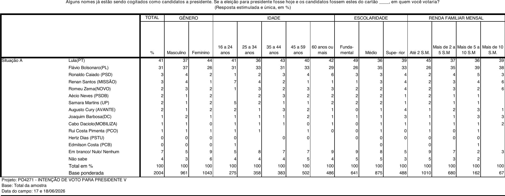
1º turno de junho: Lula 41, Flávio 31, brancos/nulos 7, não sabe 4. Caiado, Renan e Zema lideram o “terceiro caminho”.
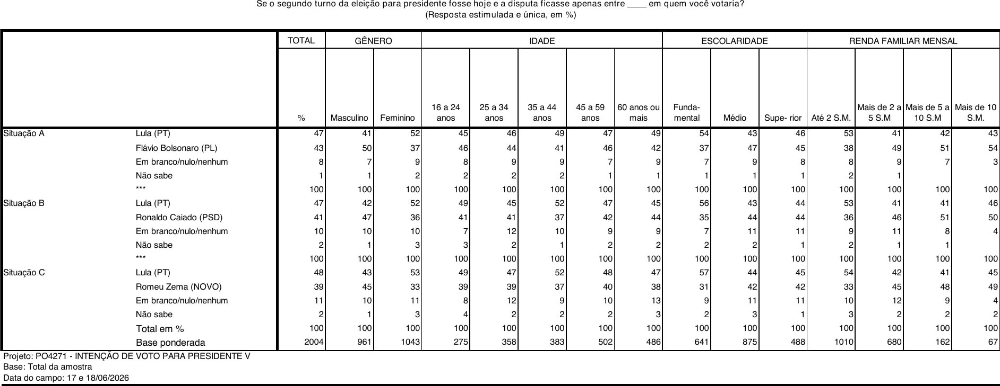
2º turno: três situações. Lula 47×43 (Flávio), 47×41 (Caiado), 48×39 (Zema). O teto de Lula não se move.
Achado nº 4 · bairros & pontos
Bairros: 77% dos setores se repetem
O anexo de bairros é a novidade útil — mostra onde as entrevistas ocorreram. Mas não revela horário, fluxo, reposição de ponto, taxa de recusa nem probabilidade de seleção. E expõe uma tensão: se o desenho “sorteia” pontos de fluxo, por que 255 dos 331 setores (77%) repetem de maio para junho, e 20 de 22 em São Paulo? Isso é mais painel de locais do que sorteio novo — e reforça a necessidade de calcular o deff sobre desenho conglomerado.
Brasil
331setores únicos · jun
2.004 entrevistas, ~6 por setor.
Repetição
77,0%setores repetidos
255 dos 331 já estavam em maio; 76 entraram, 76 saíram.
SP capital
20/22setores idênticos
A rotação real em SP entre maio e junho é mínima.
O achado de SP desmente a tese fácil
Cruzando os 22 pontos paulistanos com o 2º turno de prefeito de 2024 por bairro eleitoral, 18 caem em áreas onde Ricardo Nunes venceu Boulos e 4 onde Boulos venceu. Média simples dos pontos: Nunes 58,35%, colada no resultado oficial da cidade (Nunes 59,34%). Ou seja: em SP capital a crítica honesta não é “escolheram bairro de esquerda”. É “por que quase tudo se repetiu, e qual é o protocolo de sorteio/rotação?”.
Ponto Datafolha jun
Proxy eleitoral 2024
Nunes
Boulos
Leitura
Americanópolis / Cid. Ademar
Americanópolis
58,3
41,7
Nunes, periferia sul competitiva.
Belém
Belenzinho
62,4
37,6
Proxy mais robusto que o bairro “Belém” (n irrelevante).
Brás / Bela Vista
Bela Vista
45,1
54,9
Boulos, centro expandido.
Grajaú
Grajaú
51,8
48,2
Nunes por margem pequena.
Santa Cecília
Santa Cecília
44,1
55,9
Boulos, centro-esquerda clássico.
Vila Pompeia / Perdizes
Vila Pompeia
55,0
45,0
Nunes, zona oeste média-alta.
Demais 16 pontos
Limão, Penha, Santana, Socorro, Ipiranga, Jabaquara, Brasilândia etc.
maioria Nunes
—
Sem sinal de desenho pró-Boulos.
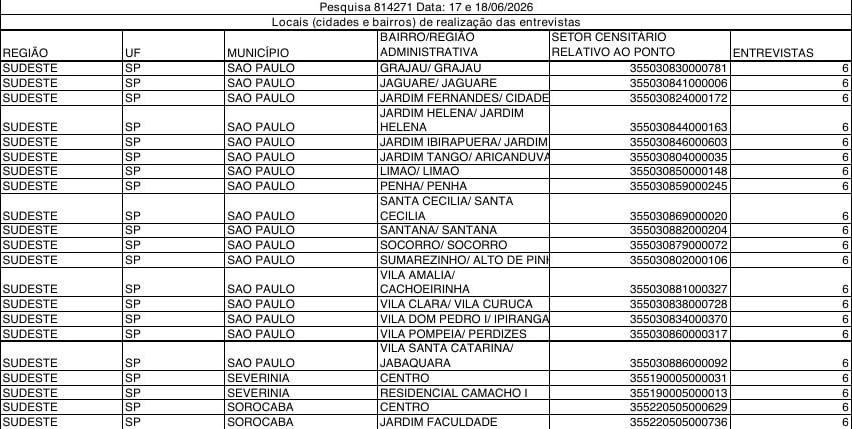
Anexo de bairros de junho (p.5): permite comparar setor a setor contra maio e contra o mapa eleitoral de 2024. O cruzamento usa bairro do local de votação do TSE — proxy, não geocodificação exata do setor.
Arquivos: datafolha_bairros_compare.csv (331 setores, 255 repetidos), datafolha_sp_bairros_2024_match.csv e sp_2024_prefeito_2t_bairros.csv (5,7 mi de votos válidos processados).
Achado nº 5 · a peça-chave
A vantagem de Lula mora na renda da amostra
Sexo, idade, região e escolaridade estão bem calibrados. A renda, não. A amostra do Datafolha é mais pobre que o país: 50,4% declaram renda familiar de até 2 salários mínimos, contra 42,9% na PNAD por domicílios e 35,4% na PNAD por pessoas 16+. Como a baixa renda dá Lula 53 × 38 e a renda acima de 2 SM dá Flávio, esse excesso de pobres tem direção conhecida: infla Lula. Recalibrando só esse marginal, a vantagem some.
Reponderação marginal: a vantagem evapora
Mantemos o voto publicado dentro de cada faixa de renda e trocamos apenas o peso de cada faixa pelo benchmark PNAD. É uma sensibilidade auditável (ignora correlações, não usa microdado), mas mostra para onde o resultado escorrega.
Lula cai de 47,4 para 45,6; Flávio sobe de 43,6 para 45,9. As linhas se cruzam: na PNAD por pessoas, é empate com leve vantagem de Flávio. Fonte: datafolha_reweight_sensitivity.json.
Por que a amostra está “pobre demais”
Compare a fatia de renda familiar até 2 SM:
Datafolha jun
50,4
PNAD domicílios
42,9
PNAD pessoas 16+
35,4
% na faixa até 2 salários mínimos. Quanto mais pobre a amostra, maior a vantagem de Lula.
Voto no 2º turno por renda — o gradiente
LulaFlávio
Até 2 SM
53
38
2–5 SM
41
49
5–10 SM
42
51
+10 SM
43
54
A virada de chave acontece exatamente em 2 SM: abaixo, Lula domina; acima, Flávio domina.
Cenário de reponderação (2º turno)
Lula
Flávio
Diferença
Leitura
Datafolha ponderado (renda publicada)
47,4
43,6
Lula +3,8
Reproduz o 47×43 oficial.
Troca região → TSE 05/2026
47,1
43,4
Lula +3,7
Região não explica nada relevante.
Troca renda → PNAD domicílios 2025 v1
46,4
44,9
Lula +1,5
A defesa mais justa do Datafolha já estreita muito.
Troca renda → PNAD pessoas 16+ 2025 v1
45,6
45,9
Flávio +0,3
Se a unidade correta for o respondente, a vantagem some.
Conclusão técnica, sem exagero
A reponderação não prova que Flávio está à frente. Prova que o “Lula +4” depende de uma amostra economicamente mais pobre que a PNAD — por domicílios e, ainda mais, por pessoas. Some isso ao empate técnico da seção 1, e a leitura honesta do 2º turno é: disputa aberta, dentro da margem, não liderança consolidada de Lula.
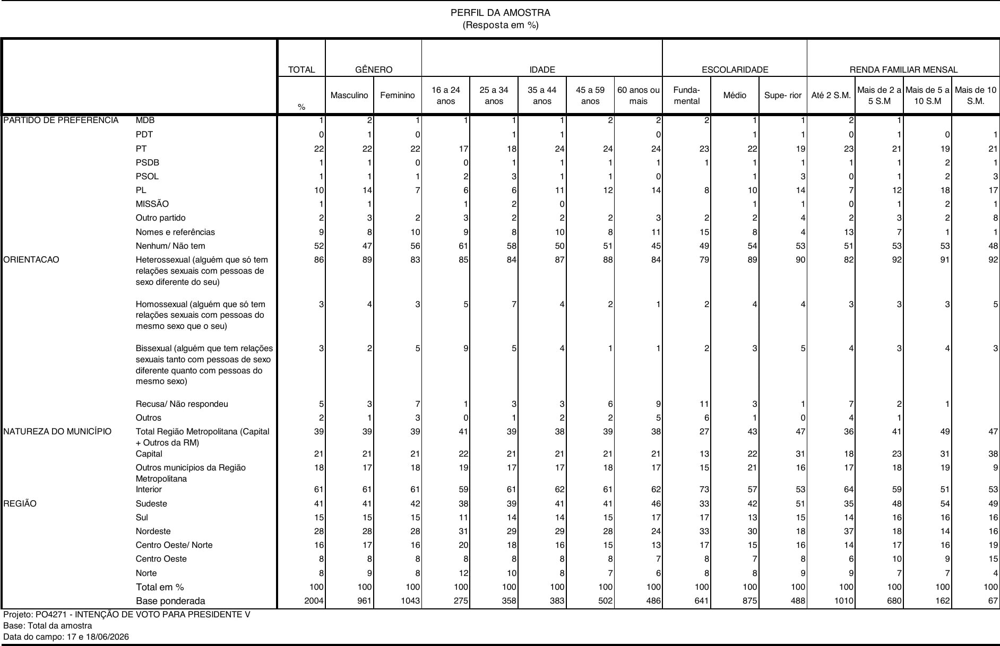
Perfil ponderado do relatório (p.17): a base dos pesos marginais usados na sensibilidade. Renda familiar até 2 SM ponderada = 1.010 de 2.004 (50,4%).
Achado nº 6 · onde o peso atuou
Bruto × ponderado: a digital da ponderação
O anexo de bairros publica a contagem bruta da amostra; o relatório publica o perfil ponderado. Cruzar os dois é raro e revelador — mostra exatamente onde a ponderação mexeu. A resposta tranquiliza em renda e região, mas acende um alerta em escolaridade: havia superior demais na coleta de rua, corrigido para baixo, e fundamental de menos, puxado para cima com fator 1,23.
Escolaridade: o maior ajuste
Fundamental ↑Médio →Superior ↓
Fundamental sobe 6,1 pontos no peso; superior cai 4. É um ajuste grande para um marginal que se correlaciona com voto. O Datafolha deveria publicar a distribuição dos pesos finais.
Onde o peso quase não mexeu
Corte
Bruto
Pond.
Fator
Sexo masculino
47,3
48,0
1,01×
60 anos ou +
22,9
24,3
1,06×
Renda até 2 SM
49,3
50,4
1,02×
Renda +5 SM
12,9
11,4
0,89×
Nordeste
27,5
28,0
1,02×
Fundamental
25,9
32,0
1,23×
Superior
28,4
24,4
0,86×
Detalhe contraintuitivo: a ponderação deixou a amostra ainda mais pobre (até 2 SM subiu de 49,3 para 50,4%). O viés de renda não é “corrigido” pelo peso — é levemente reforçado.
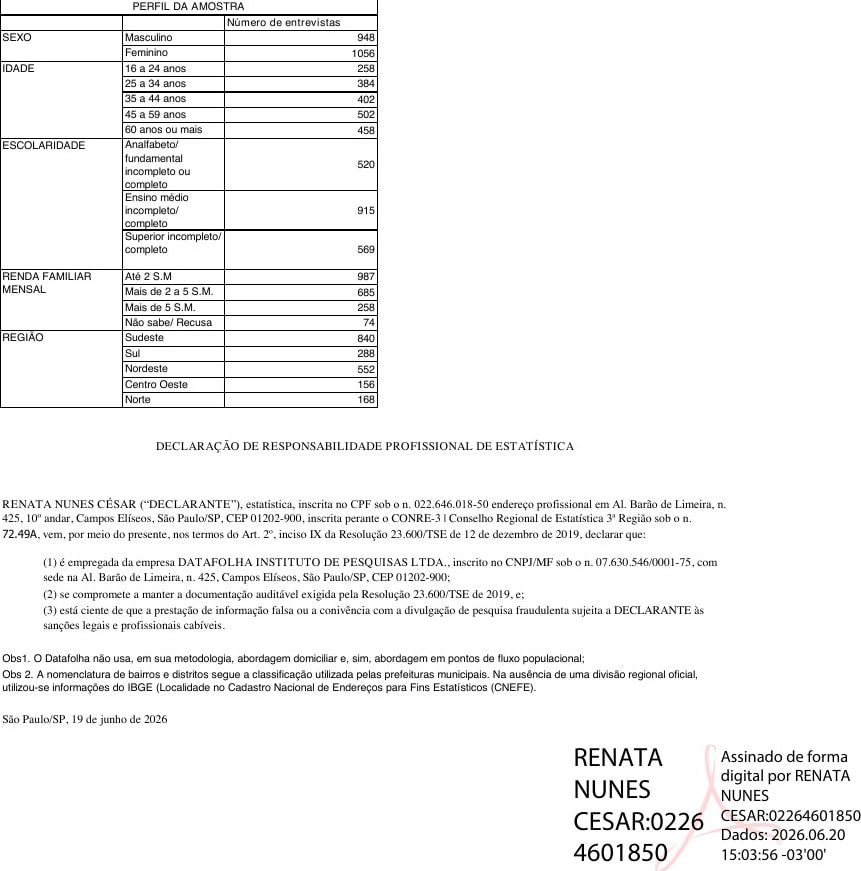
Perfil bruto (anexo de bairros, p.6): contagens não ponderadas. A declaração de responsabilidade técnica confirma a abordagem em pontos de fluxo e o uso do CNEFE/IBGE.
Achado nº 7 · transparência do questionário
As perguntas-fantasma — inclusive sobre o próprio Flávio
O lado bom: o voto presidencial vem antes dos módulos de Trump, facções, economia e ideologia, blindando o top-line de priming direto. O lado ruim: o relatório publica uma fração mínima do que foi perguntado. E entre o que ficou de fora há perguntas que avaliam diretamente Flávio Bolsonaro — aplicadas a todos os entrevistados e nunca divulgadas.
✓ Publicado no relatório
✓Voto espontâneo, estimulado, rejeição e os três cenários de 2º turno.
✓Avaliação e aprovação do governo Lula.
✓Efeito do apoio de Trump (aumenta 17 / diminui 15 / indiferente 65).
✓Arrependimento do voto de 2022 (8% sim) — mas sobre base de 1.546, sem revelar em quem votaram.
✕ Aplicado e não publicado
✕P.14/P.15 — Flávio influenciou os EUA a classificar PCC/CV como terroristas? Isso foi positivo ou negativo? Pergunta sobre o próprio candidato, retida.
✕P.10 — percepção econômica (país e pessoal).
✕P.11–P.13 — facções como organizações terroristas; EUA com “direito” de atacar facções no Brasil sem avisar.
✕P.16–P.18 — bateria ideológica (armas, drogas, pena de morte, homossexualidade, Deus, sindicatos) e maioridade penal.
✕P.19–P.20 — Inteligência Artificial.
✕Distribuição do voto lembrado de 2022 — a auditoria política básica da amostra.
A tabela que deveria estar publicada
O questionário pergunta em quem o eleitor votou no 2º turno de 2022. A lembrança ponderada deveria orbitar Lula 50,9 × Bolsonaro 49,1 (votos válidos), com desconto por memória e desejabilidade. Sem essa tabela, não há como testar se a amostra está politicamente enviesada. Publicar arrependimento (8%) sem publicar a base lembrada é divulgar o efeito escondendo a causa.
Por que isso é grave
Reter perguntas sobre economia e ideologia é discutível; reter uma pergunta que avalia se a ação de Flávio nos EUA foi positiva ou negativa é editorialmente sensível. O instituto coletou um dado de altíssimo valor reputacional sobre um dos dois finalistas — e não o mostrou. Transparência exige publicar o resultado de todas as perguntas registradas, ou justificar cada omissão.
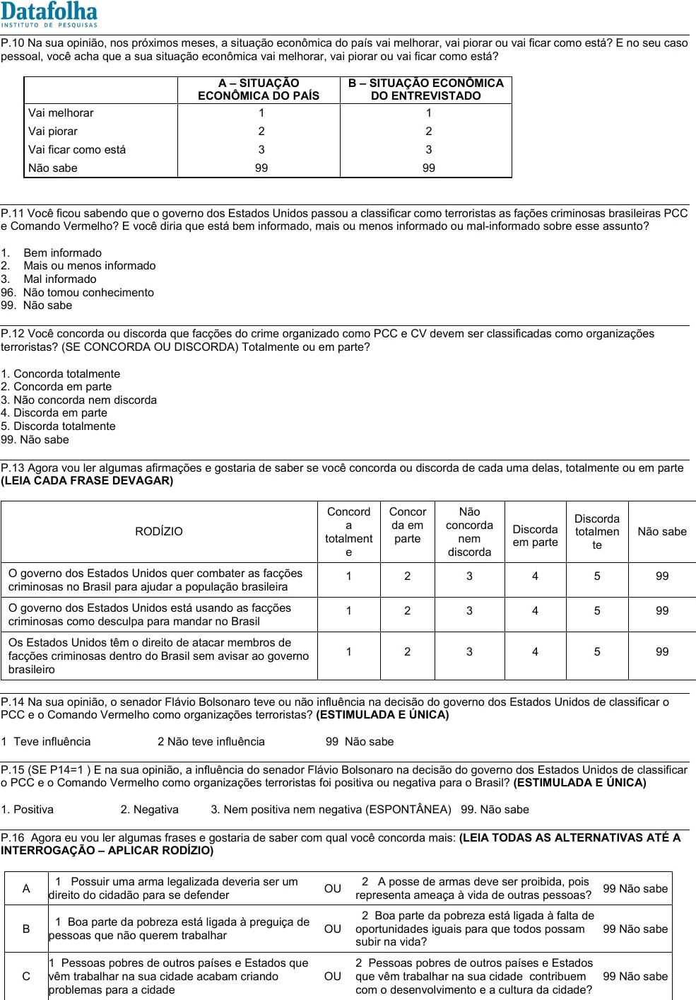
P.14/P.15: aplicaram perguntas sobre a influência de Flávio na decisão dos EUA — e se ela foi positiva ou negativa. Não aparecem no relatório.
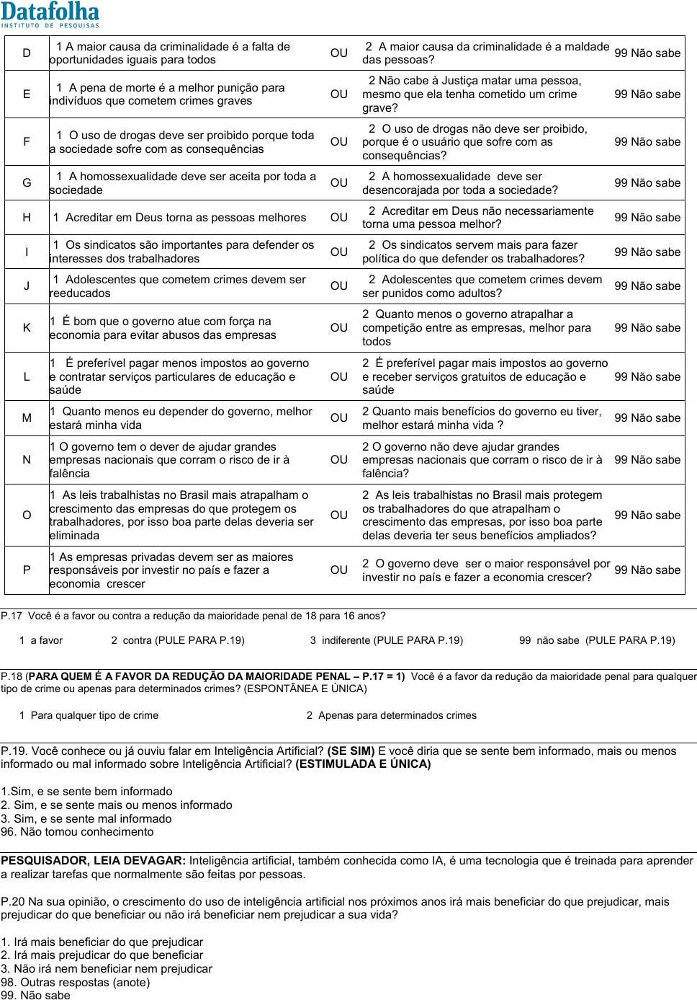
Bateria ideológica extensa (armas, pobreza, drogas, pena de morte, homossexualidade, Deus, sindicatos, impostos) — um instrumento de message-testing inteiro, não publicado.
Achado nº 8 · a construção da narrativa
A fábrica de narrativa: como o número vira pauta
Uma pesquisa é um insumo. A notícia é um produto editorial construído por cima dele. E a Folha de S.Paulo não é só veículo: é a contratante do Datafolha. Ou seja, decide as perguntas que entram, decide o que publicar e decide o enquadramento da manchete. Comparamos como a imprensa cobriu este levantamento — e o padrão é nítido: o dado dizia “empate técnico”, a manchete dominante disse “Lula lidera”.
O duplo padrão do “empate técnico”
O mesmo veículo que chama a rejeição de Flávio (48) e Lula (46) de “empate técnico dentro da margem” se recusa a aplicar a mesma régua ao voto de 2º turno (47 × 43). Mas a diferença de 4 pontos tem margem de ~±4 a ±5 pp (seção “Empate técnico”) — é tão empate quanto a rejeição, ou mais. A escolha de chamar um de “empate” e o outro de “liderança” não é estatística. É editorial.
O mural de manchetes — o mesmo dado, frames diferentes
Manchetes reais publicadas entre 17 e 24/06/2026 sobre esta pesquisa. A cor indica o enquadramento. Repare como o frame “Lula lidera” e o frame “Flávio ferido pelo escândalo” dominam, enquanto o frame estatisticamente correto (“empate/estabilidade”) é minoria.
Levantamento de manchetes públicas (links clicáveis). A Folha/UOL bloqueia indexação automática; o enquadramento da Folha está representado pelo Correio Braziliense e demais veículos que reproduziram a leitura da contratante. Houve, sim, cobertura neutra (Gazeta do Povo: “veja os números”) e honesta (InfoSAJ, BM&C) — mas foi minoria diante do frame “Lula lidera”.
Os prints — a evidência, não a paráfrase
Capturas reais das páginas, feitas em 24/06/2026. O mesmo levantamento Datafolha, enquadrado de quatro maneiras diferentes — e o frame estatisticamente correto (empate) aparecendo só num veículo pequeno do interior baiano.
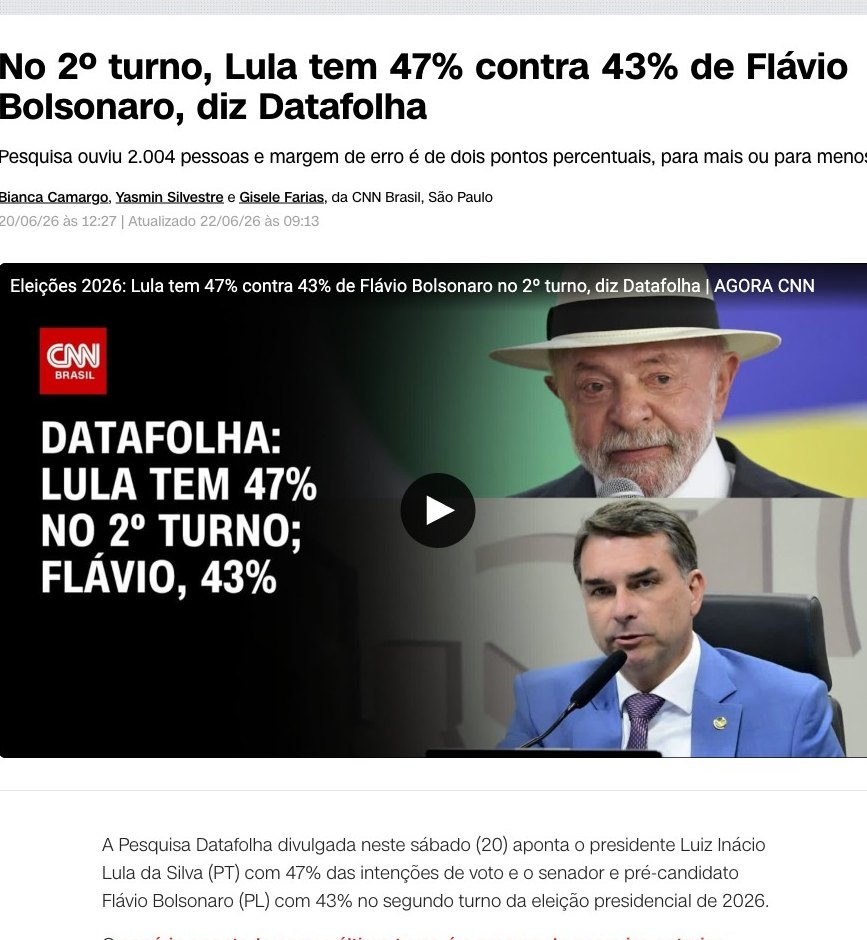
Lula lideraCNN Brasil. O card de vídeo transforma o número em manchete: “Datafolha: Lula tem 47% no 2º turno; Flávio, 43%”. Sem menção a empate técnico.
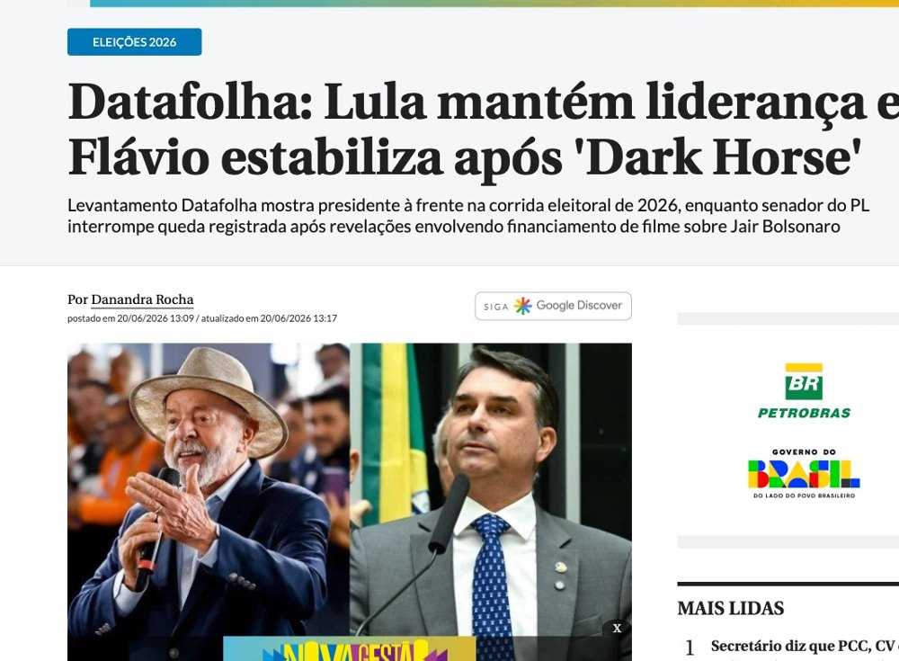
Flávio feridoCorreio Braziliense. O escândalo entra no título: “estabiliza após ‘Dark Horse’”. A linha-fina já cita “financiamento de filme sobre Jair Bolsonaro”.
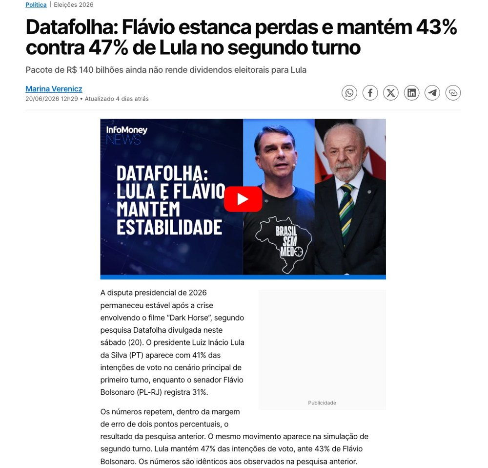
Flávio feridoInfoMoney. “Flávio estanca perdas” — e o próprio card de vídeo admite o que a manchete esconde: “Lula e Flávio mantêm estabilidade”.
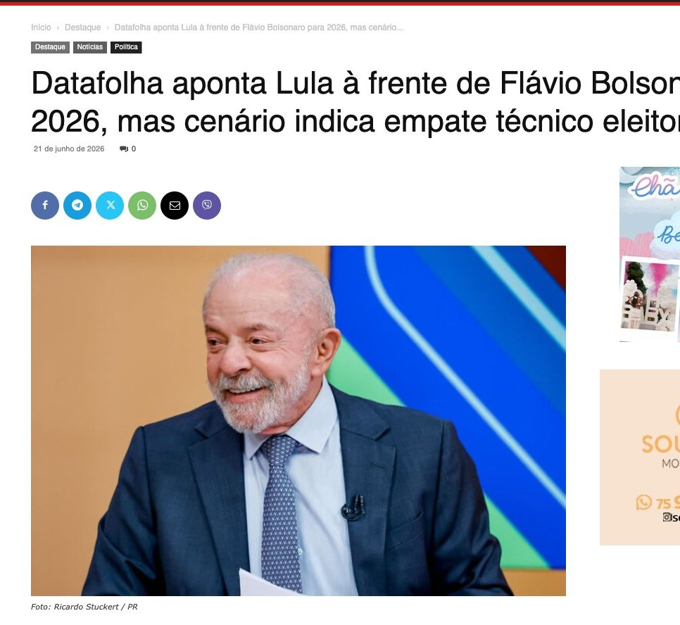
Empate (correto)InfoSAJ. O único da amostra a colocar a verdade no título: “mas cenário indica empate técnico no limite da margem de erro”.
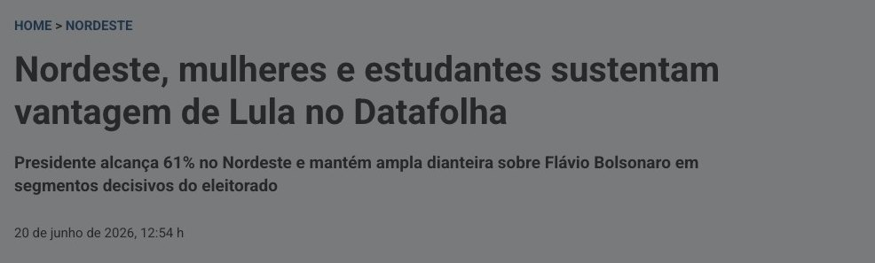
RecorteBrasil247. Destaca só os segmentos fortes de Lula (“61% no Nordeste”). A metade simétrica — homens, Sul, renda alta, evangélicos com Flávio — não vira manchete.
Mesma pesquisa. Quatro narrativas.
Lula lidera · Flávio ferido · empate técnico · recorte pró-Lula. O dado é um só. A diferença está na redação — e em quem encomendou.
O contratante controla os dois lados
A Folha não “recebe” a pesquisa pronta. Ela encomenda. Isso significa poder sobre o instrumento e sobre a narrativa — um ciclo fechado:
Encomendou a pergunta do efeito Trump e a da influência de Flávio nos EUA. Publicou o Trump (“não resolve os problemas dele”), reteve a de Flávio. Mesmo instituto, mesmo grupo, controle dos dois lados.
O pré-enquadramento “Dark Horse”
Desde maio, quase toda matéria reancora a pesquisa ao escândalo do filme “Dark Horse / Azarão”: Flávio teria negociado R$ 134 mi com Daniel Vorcaro (Banco Master) para financiar um filme sobre Jair (revelação do Intercept, áudio). O resultado: a pesquisa deixa de ser “foto do voto” e vira capítulo semanal do escândalo.
22/05 · Datafolha de maio: “1º após o vazamento”, gap vai a 9 pts
17–18/06 · Campo de junho; números idênticos a maio
20/06 · Manchete: “Flávio estabiliza após Dark Horse” — escândalo no título
Enquadrar estabilidade como “estabiliza após o escândalo” mantém o eleitor com a moldura da crise mesmo quando o número não se move. É agenda-setting clássico: a imprensa não diz só o que pensar, diz sobre o que pensar.
A origem do frameIntercept Brasil (13/05/2026). O áudio que abriu o caso “Dark Horse”: Flávio Bolsonaro negociando R$ 134 milhões com Daniel Vorcaro, do Banco Master, para financiar um filme sobre Jair (“estou e estarei contigo sempre”). É o gancho que a cobertura de pesquisa reutiliza toda semana — e que reconecta a história ao mesmo Master/Vorcaro dos dossiês anteriores.
Decodificador: como ler uma manchete de pesquisa
!“X lidera / mantém / amplia” com gap dentro de ~2× a margem → leia como empate técnico. Verbo de liderança não é dado, é escolha.
!Número escolhido. “10 pontos à frente” (1º turno) soa mais que “47×43” (2º). Pergunte qual cenário a manchete preferiu e por quê.
!Recorte seletivo. “Mulheres e Nordeste sustentam Lula” é verdade — e a metade que falta (“homens e Sul sustentam Flávio”) também.
?Quem pagou? Contratante define perguntas e pauta. Pesquisa Datafolha é encomenda da Folha. Isso é legítimo — mas deve estar no holofote, não no rodapé.
?O que não foi publicado? A pergunta retida costuma valer mais que a divulgada (aqui: a influência de Flávio nos EUA).
?Margem da diferença, não da estimativa. ±2 vale para cada número; a distância entre dois candidatos tem ~±4. Quase nenhuma manchete diz isso.
O ponto, sem teoria da conspiração
Nada disso é fraude nem censura. É enquadramento — e enquadramento é poder. Uma empresa jornalística que encomenda a pesquisa, escolhe as perguntas, decide o que publicar e ainda redige a manchete tem quatro alavancas para moldar a percepção pública a partir do mesmo conjunto de números. A defesa do leitor é uma só: separar o dado (47×43, empate técnico, estável) da narrativa (“Lula lidera”, “Flávio ferido”) — e cobrar que as duas coisas venham marcadas como o que são.
Inteligência de campanha
O mapa de batalha de Flávio
O diagnóstico é cirúrgico. Flávio já consolida homens e renda acima de 2 SM. O buraco está em mulheres, baixa renda e baixa escolaridade — onde Lula abre 15 a 17 pontos. A boa notícia: o anti-Lula existe (rejeição de Lula em 46%), Flávio transfere votos 2:1 e a disputa cabe na margem. A campanha não precisa gritar mais para a base; precisa reduzir medo e custo reputacional em três células decisivas.
Onde a eleição se decide — recortes verificados do 2º turno
Lula lideraFlávio lideraborda = quem vence o segmento
Lula +15
Mulheres
52×37
O maior déficit nacional. Prioridade absoluta.
Lula +15
Até 2 SM
53×38
Base lulista sólida. Conter, não converter.
Lula +17
Fundamental
54×37
Escolaridade baixa = território de Lula.
Flávio +9
Homens
41×50
Fortaleza. Manter sem sangrar mulheres.
Flávio +8/+9
Renda 2–10 SM
41×49–51
Classe média com medo econômico. Expansível.
Empate
Superior · 16–24
46×45
Jovens e diploma: a real terra de ninguém.
Espelho da rejeição: o problema de cada um tem sexo
Os dois são muito rejeitados (Flávio 48, Lula 46). A diferença é onde: a rejeição de Flávio explode entre mulheres; a de Lula, entre homens. Isso desenha a tesoura da campanha.
Reduzir a rejeição de Flávio entre mulheres (53%) vale mais que qualquer ganho marginal na base. É o gargalo nº 1 da candidatura.
O playbook em 5 movimentos
1Mulheres (−15). Segurança, saúde, custo da comida e da energia, escola e proteção social — sem pose agressiva. É a célula que decide o 2º turno.
2Renda 2–10 SM (+8/+9, expansível). Virar fiador econômico: estabilidade, imposto menor, crédito para o pequeno negócio. Medo de retrocesso joga a favor.
3Rejeição de Lula como permissão (46%). “Você não precisa amar Flávio para trocar o rumo econômico e de segurança.” Converter anti-Lula em voto útil.
4Anticorpo reputacional pós-Master. A rejeição de 48% é tanto ética quanto ideológica. Sem blindagem de integridade, o moderado anula ou fica com Lula.
5Trump, com cirurgia. Saldo nacional é só +2 líquido (17 a favor, 15 contra). Munição segmentada na base PL; no nacional, enquadrar soberania e segurança, não subordinação.
A síntese estratégica
A eleição não está perdida nem ganha — está na margem. Lula está travado em 47–48 contra qualquer adversário; o jogo é a oposição consolidar os 28 pontos disponíveis, e Flávio já é quem melhor faz isso. O caminho da vitória não passa por radicalizar a base, e sim por desarmar o medo entre mulheres e classe média e baixar o teto de rejeição. Cada ponto de rejeição derrubado vale mais que dez de marketing.
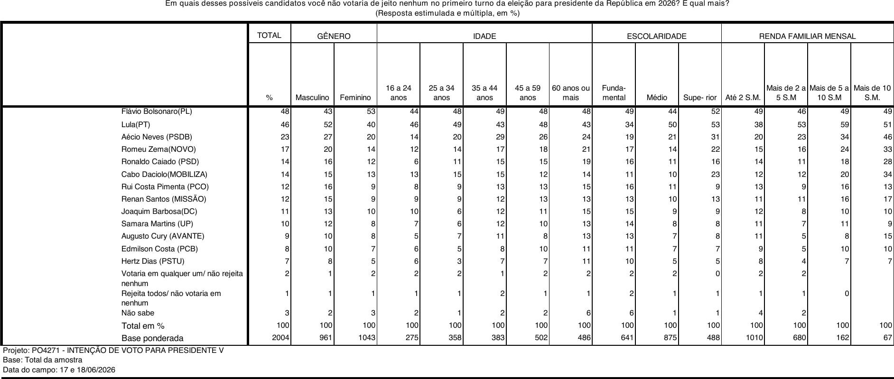
Rejeição: Flávio 48 (53 entre mulheres), Lula 46 (52 entre homens). O teto de Flávio é o ativo mais decisivo a trabalhar.
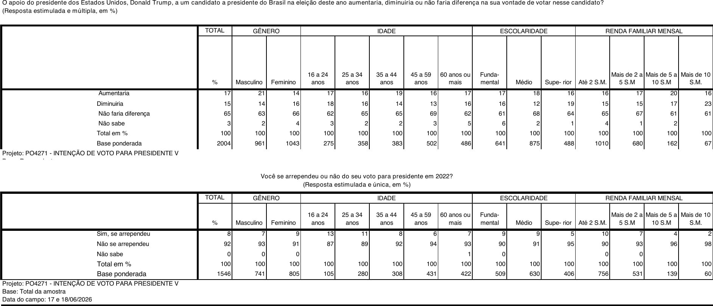
Trump: 17% mais propensos, 15% menos, 65% indiferentes (saldo +2). Arrependimento de 2022: 8%, mas sobre base de 1.546 e sem o voto lembrado.
A régua que falta
Como a pesquisa ficaria incontestável
O Datafolha tem marca, campo nacional e documentação acima da média do mercado. Justamente por isso precisa subir a régua: pesquisa eleitoral registrada é produto privado com efeito público. Nada aqui exige “provar inocência” — exige abrir o suficiente para que qualquer um refaça a conta.
Transparência mínima
Microdados anonimizados pós-divulgação.
Pesos finais por entrevistado (ou ao menos a distribuição).
Targets de ponderação, não referências genéricas.
Efeito de desenho (deff) e n efetivo.
Taxa de recusa, substituição e checagem por UF.
Bairros & pontos
Dizer se o ponto é sorteado, rotacionado ou painel.
Protocolo de horário, dias, fluxo e reposição.
Coordenadas aproximadas do setor/ponto.
Separar bairro, distrito, RA e setor sem PDF quebrado.
Entregar CSV oficial, não só PDF.
Questionário
Resultado de todas as perguntas registradas.
Distribuição do voto lembrado em 2022.
Marcar o que é eleitoral, conjuntural e experimental.
Informar split de cartões, rotação e randomização.
Amostragem
Abandonar a margem AAS como manchete única.
Erro por subgrupo com n efetivo (não n ponderado).
Perfil final × TSE (eleitorado) e × PNAD (renda/escolaridade).
Cotas de campo × pós-estratificação final.
Metodologia publicada: boa para contexto, insuficiente para auditoria de desenho, pesos e pontos de fluxo. A checagem cobre “no mínimo 20%” do material — 80% das entrevistas ficam sem verificação declarada.
Trilha auditável
Fontes e reprodutibilidade
Relatório preparado com os PDFs oficiais movidos para o repositório, texto extraído via PDF.js, imagens renderizadas com Poppler e cruzamentos TSE/PNAD locais. Cada número desta página tem um arquivo de origem.
Esta auditoria não acusa fraude. O efeito de desenho e a reponderação são simulações declaradas, baseadas nos números publicados pelo próprio Datafolha — não em microdados, que não foram disponibilizados. As conclusões são de incerteza estatística e de transparência, não de má-fé. Todos os insumos estão no repositório aberto para conferência, contestação ou refutação.